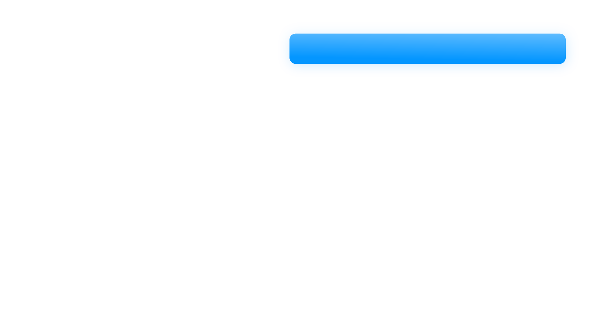
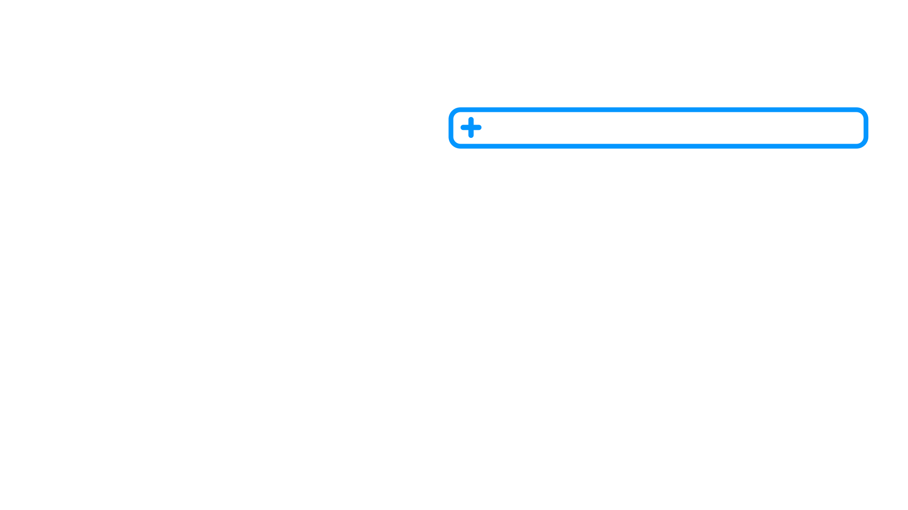

<!DOCTYPE html>
<html lang="en">
<head>
  <meta charset="UTF-8">
  <title>1 Point — 7 Subtopics</title>
  <link href="https://api.fontshare.com/v2/css?f[]=satoshi@700,900&display=swap" rel="stylesheet">
  <style>
    * { margin: 0; padding: 0; box-sizing: border-box; }
    html, body, #root {
      width: 100%; height: 100%; overflow: hidden;
      background: #0a0a0a;
      font-family: 'Satoshi', -apple-system, BlinkMacSystemFont, 'Helvetica Neue', Arial, sans-serif;
    }
  </style>
</head>
<body>
  <div id="root"></div>

  <script crossorigin src="https://unpkg.com/react@18/umd/react.development.js"></script>
  <script crossorigin src="https://unpkg.com/react-dom@18/umd/react-dom.development.js"></script>
  <script src="https://unpkg.com/@babel/standalone/babel.min.js"></script>

  <script type="text/babel">
    // ─── Inline SVG icons (loaded from /Video_Templates/Icon Library) ────────
    // Anchor icon: edit (1).svg — document with horizontal lines and a pen.
    // Default fill is #052438 (Oxford Blue outlines); blue accents are #0496FF.
    const ANCHOR_ICON_SVG = `<svg xmlns="http://www.w3.org/2000/svg" viewBox="0 0 512 512" width="100%" height="100%" fill="#052438">
<g>
  <g><path style="fill:#0496FF;" d="M288.667,218h-196c-6.075,0-11-4.925-11-11s4.925-11,11-11h196c6.075,0,11,4.925,11,11S294.742,218,288.667,218z"/></g>
  <g><path style="fill:#0496FF;" d="M288.667,348.667h-196c-6.075,0-11-4.925-11-11s4.925-11,11-11h196c6.075,0,11,4.925,11,11S294.742,348.667,288.667,348.667z"/></g>
  <g><rect x="435.667" y="81.666" style="fill:#0496FF;" width="65.334" height="22"/></g>
  <path d="M368.548,12.798C360.305,4.545,349.338,0,337.667,0H109c-2.918,0-5.715,1.159-7.778,3.222l-98,98C1.159,103.285,0,106.082,0,109v359.333C0,492.411,19.589,512,43.667,512h294c11.671,0,22.639-4.545,30.875-12.792c8.249-8.246,12.792-19.211,12.792-30.875V43.667C381.333,32.003,376.79,21.038,368.548,12.798z M113.556,22h0.777v70.666c0,11.947-9.72,21.667-21.667,21.667H22v-0.777L113.556,22z M359.333,468.333c0,5.786-2.253,11.225-6.351,15.322c-4.087,4.091-9.526,6.345-15.316,6.345h-294C31.72,490,22,480.28,22,468.333v-332h70.666c24.078,0,43.667-19.589,43.667-43.667V22h201.333c5.79,0,11.229,2.253,15.322,6.351c4.092,4.091,6.345,9.53,6.345,15.316V468.333z"/>
  <g><path d="M288.667,283.333h-196c-6.075,0-11-4.925-11-11s4.925-11,11-11h196c6.075,0,11,4.925,11,11S294.742,283.333,288.667,283.333z"/></g>
  <g><path d="M190.667,414h-98c-6.075,0-11-4.925-11-11s4.925-11,11-11h98c6.075,0,11,4.925,11,11S196.742,414,190.667,414z"/></g>
  <path d="M468.333,0c-24.078,0-43.667,19.589-43.667,43.667v318.957c0,49.483,11.698,99.035,33.829,143.295c1.863,3.727,5.672,6.081,9.838,6.081c4.166,0,7.976-2.354,9.839-6.081C500.303,461.658,512,412.107,512,362.624V43.667C512,19.589,492.411,0,468.333,0z M468.333,22C480.28,22,490,31.72,490,43.667v315.667h-43.333V43.667C446.667,31.72,456.386,22,468.333,22z M468.333,474.22c-11.893-29.57-19.026-61.083-21.05-92.886h42.1C487.359,413.138,480.226,444.65,468.333,474.22z"/>
</g>
</svg>`;

    // Header pill placeholder interface icon — simple white lightbulb glyph.
    const HEADER_BULB_SVG = `<svg xmlns="http://www.w3.org/2000/svg" viewBox="0 0 24 24" width="100%" height="100%" fill="#FFFFFF">
  <path d="M9 21h6v-1H9v1zm3-19a7 7 0 0 0-4 12.74V17a1 1 0 0 0 1 1h6a1 1 0 0 0 1-1v-2.26A7 7 0 0 0 12 2zm2.86 11.18-.86.62V16h-4v-2.2l-.86-.62a5 5 0 1 1 5.72 0z"/>
  <path d="M10 22h4a1 1 0 0 1 0 2h-4a1 1 0 0 1 0-2z"/>
</svg>`;

    // ─── Easing + helpers ────────────────────────────────────────────────────
    const Easing = {
      linear:         t => t,
      easeInOutQuad:  t => t < 0.5 ? 2*t*t : 1 - Math.pow(-2*t + 2, 2) / 2,
      easeOutCubic:   t => 1 - Math.pow(1 - t, 3),
      easeInOutCubic: t => t < 0.5 ? 4*t*t*t : 1 - Math.pow(-2*t + 2, 3) / 2,
      easeInOutQuint: t => t < 0.5 ? 16*t*t*t*t*t : 1 - Math.pow(-2*t + 2, 5) / 2,
      easeOutBack:    t => {
        const c1 = 1.70158, c3 = c1 + 1;
        return 1 + c3 * Math.pow(t - 1, 3) + c1 * Math.pow(t - 1, 2);
      },
      // Same shape as easeOutBack but with a tamer overshoot (~3% peak),
      // for shells that should feel lively without bouncing.
      easeOutBackSubtle: t => {
        const c1 = 0.6, c3 = c1 + 1;
        return 1 + c3 * Math.pow(t - 1, 3) + c1 * Math.pow(t - 1, 2);
      },
    };
    const clamp = (v, a, b) => Math.max(a, Math.min(b, v));
    const animate = ({ from = 0, to = 1, start = 0, end = 1, ease = Easing.easeOutCubic }) => t => {
      if (t <= start) return from;
      if (t >= end)   return to;
      return from + (to - from) * ease((t - start) / (end - start));
    };

    const TimelineContext = React.createContext({ time: 0, duration: 10 });
    const useTime = () => React.useContext(TimelineContext).time;

    // ─── Stage ───────────────────────────────────────────────────────────────
    function Stage({ width = 1920, height = 1080, duration = 10, background = '#E6ECF2', children }) {
      const [time, setTime]       = React.useState(0);
      const [playing, setPlaying] = React.useState(true);
      const [scale, setScale]     = React.useState(1);
      const stageRef = React.useRef(null);
      const rafRef   = React.useRef(null);
      const lastTs   = React.useRef(null);

      React.useEffect(() => {
        const measure = () => {
          if (!stageRef.current) return;
          const w = stageRef.current.clientWidth;
          const h = stageRef.current.clientHeight - 52;
          setScale(Math.max(0.05, Math.min(w / width, h / height)));
        };
        measure();
        const ro = new ResizeObserver(measure);
        ro.observe(stageRef.current);
        window.addEventListener('resize', measure);
        return () => { ro.disconnect(); window.removeEventListener('resize', measure); };
      }, [width, height]);

      React.useEffect(() => {
        if (!playing) { lastTs.current = null; return; }
        const step = (ts) => {
          if (lastTs.current == null) lastTs.current = ts;
          const dt = (ts - lastTs.current) / 1000;
          lastTs.current = ts;
          setTime(t => {
            let next = t + dt;
            if (next >= duration) next = next % duration;
            return next;
          });
          rafRef.current = requestAnimationFrame(step);
        };
        rafRef.current = requestAnimationFrame(step);
        return () => cancelAnimationFrame(rafRef.current);
      }, [playing, duration]);

      React.useEffect(() => {
        const onKey = (e) => {
          if (e.code === 'Space') { e.preventDefault(); setPlaying(p => !p); }
          else if (e.code === 'ArrowLeft')  setTime(t => clamp(t - (e.shiftKey ? 1 : 0.1), 0, duration));
          else if (e.code === 'ArrowRight') setTime(t => clamp(t + (e.shiftKey ? 1 : 0.1), 0, duration));
          else if (e.key === '0') setTime(0);
        };
        window.addEventListener('keydown', onKey);
        return () => window.removeEventListener('keydown', onKey);
      }, [duration]);

      return (
        <div ref={stageRef} style={{ position: 'absolute', inset: 0, display: 'flex', flexDirection: 'column', background: '#0a0a0a' }}>
          <div style={{ flex: 1, display: 'flex', alignItems: 'center', justifyContent: 'center', overflow: 'hidden', minHeight: 0 }}>
            <div style={{ width, height, background, position: 'relative', transform: `scale(${scale})`, transformOrigin: 'center', flexShrink: 0, boxShadow: '0 20px 60px rgba(0,0,0,0.4)', overflow: 'hidden' }}>
              <TimelineContext.Provider value={{ time, duration }}>
                {children}
              </TimelineContext.Provider>
            </div>
          </div>
          <PlaybackBar time={time} duration={duration} playing={playing} onPlayPause={() => setPlaying(p => !p)} onReset={() => setTime(0)} onSeek={setTime} />
        </div>
      );
    }

    function PlaybackBar({ time, duration, playing, onPlayPause, onReset, onSeek }) {
      const trackRef = React.useRef(null);
      const [drag, setDrag] = React.useState(false);
      const pct = duration > 0 ? (time / duration) * 100 : 0;
      const fmt = (t) => {
        const m = Math.floor(t / 60), s = Math.floor(t % 60), cs = Math.floor((t * 100) % 100);
        return `${m}:${String(s).padStart(2,'0')}.${String(cs).padStart(2,'0')}`;
      };
      const seek = (e) => {
        const r = trackRef.current.getBoundingClientRect();
        onSeek(clamp((e.clientX - r.left) / r.width, 0, 1) * duration);
      };
      React.useEffect(() => {
        if (!drag) return;
        const up = () => setDrag(false);
        const mv = (e) => seek(e);
        window.addEventListener('mouseup', up); window.addEventListener('mousemove', mv);
        return () => { window.removeEventListener('mouseup', up); window.removeEventListener('mousemove', mv); };
      }, [drag]);
      const btn = { width: 28, height: 28, display:'flex', alignItems:'center', justifyContent:'center', background:'rgba(255,255,255,0.04)', border:'1px solid rgba(255,255,255,0.1)', borderRadius:6, color:'#f6f4ef', cursor:'pointer', padding:0 };
      const mono = 'ui-monospace, SFMono-Regular, monospace';
      return (
        <div style={{ display:'flex', alignItems:'center', gap:12, padding:'8px 16px', background:'rgba(20,20,20,0.92)', borderTop:'1px solid rgba(255,255,255,0.08)', width:'100%', maxWidth:680, alignSelf:'center', borderRadius:8, color:'#f6f4ef', fontFamily:'Inter,system-ui,sans-serif', userSelect:'none', flexShrink:0 }}>
          <button onClick={onReset} title="Return to start" style={btn}>
            <svg width="14" height="14" viewBox="0 0 14 14" fill="none"><path d="M3 2v10M12 2L5 7l7 5V2z" stroke="currentColor" strokeWidth="1.5" strokeLinejoin="round" strokeLinecap="round"/></svg>
          </button>
          <button onClick={onPlayPause} title="Play/pause (space)" style={btn}>
            {playing ? (<svg width="14" height="14" viewBox="0 0 14 14" fill="none"><rect x="3" y="2" width="3" height="10" fill="currentColor"/><rect x="8" y="2" width="3" height="10" fill="currentColor"/></svg>) : (<svg width="14" height="14" viewBox="0 0 14 14" fill="none"><path d="M3 2l9 5-9 5V2z" fill="currentColor"/></svg>)}
          </button>
          <div style={{ fontFamily:mono, fontSize:12, fontVariantNumeric:'tabular-nums', width:64, textAlign:'right' }}>{fmt(time)}</div>
          <div ref={trackRef} onMouseDown={(e)=>{setDrag(true);seek(e);}} style={{ flex:1, height:22, position:'relative', cursor:'pointer', display:'flex', alignItems:'center' }}>
            <div style={{ position:'absolute', left:0, right:0, height:4, background:'rgba(255,255,255,0.12)', borderRadius:2 }}/>
            <div style={{ position:'absolute', left:0, width:`${pct}%`, height:4, background:'#0496FF', borderRadius:2 }}/>
            <div style={{ position:'absolute', left:`${pct}%`, top:'50%', width:12, height:12, marginLeft:-6, marginTop:-6, background:'#fff', borderRadius:6, boxShadow:'0 2px 4px rgba(0,0,0,0.4)' }}/>
          </div>
          <div style={{ fontFamily:mono, fontSize:12, fontVariantNumeric:'tabular-nums', width:64, color:'rgba(246,244,239,0.55)' }}>{fmt(duration)}</div>
        </div>
      );
    }

    // ─── Inline SVG renderer ─────────────────────────────────────────────────
    function InlineSVG({ svg, style }) {
      return <div style={style} dangerouslySetInnerHTML={{ __html: svg }} />;
    }

    // ─── Scene constants (measured from the supplied PNGs) ───────────────────
    const FONT_STACK = "'Satoshi', -apple-system, BlinkMacSystemFont, 'Helvetica Neue', Arial, sans-serif";

    // Detail pill graphic in Pill_Outline.png lives at x=949..1835, y=228..313.
    const PILL_SRC_CX = 1392;     // (949 + 1835) / 2
    const PILL_SRC_CY = 270;      // (228 + 313) / 2
    const PILL_W      = 886;
    const PILL_H      = 85;

    // Final composition centre-y of each detail pill (px in 1920×1080 frame).
    const ROW_CYS = [270, 378, 490, 601, 711, 821];

    // The "+" icon inside Pill_Outline.png sits roughly x=975..1015 (centre 995).
    // Text begins just to the right of that with comfortable padding.
    const TEXT_LEFT  = 1040;
    const TEXT_RIGHT = 1820;

    // Title pill graphic in Title_Pill.png lives at x=942..1840, y=110..207.
    const TITLE_CX = 1391;
    const TITLE_CY = 158;

    // ─── Animation timings (≤10s total) ──────────────────────────────────────
    // Phase 1a: 0.00 – 0.60s — Oxford Blue right panel slides in from the right.
    const NAVY_PAN_START = 0.00;
    const NAVY_PAN_END   = 0.60;

    // Phase 1b: anchor fades in (0.5s opacity, per spec), header pill slides in.
    const ICON_FADE_START    = 0.50;
    const ICON_FADE_END      = 1.00;
    const HEADER_SLIDE_START = 0.50;
    const HEADER_SLIDE_END   = 1.30;

    // Phase 2: 1.3s onward — six rows, sequential waterfall.
    // Each row: scale-in (0.60s, easeOutBackSubtle — smooth with a small
    // overshoot), then typewriter (0.80s). Row N starts as Row N-1 finishes.
    const ROW_SCALE_DUR = 0.60;
    const ROW_TYPE_DUR  = 0.80;
    const ROW_TOTAL     = ROW_SCALE_DUR + ROW_TYPE_DUR;       // 1.40s
    const ROW_START0    = 1.30;
    // Row starts: 1.30, 2.70, 4.10, 5.50, 6.90, 8.30 → last finishes at 9.70s.

    // ─── Anchor (left-side line-art icon) ────────────────────────────────────
    const ANCHOR_SIZE = 520;
    const ANCHOR_CX   = 432;       // 1920 * 0.225 (centre of left 45% panel)
    const ANCHOR_CY   = 540;

    function Anchor({ time }) {
      const opacity = animate({
        from: 0, to: 1,
        start: ICON_FADE_START, end: ICON_FADE_END,
        ease: Easing.easeInOutCubic,
      })(time);
      return (
        <div style={{
          position: 'absolute',
          left: ANCHOR_CX - ANCHOR_SIZE / 2,
          top:  ANCHOR_CY - ANCHOR_SIZE / 2,
          width: ANCHOR_SIZE, height: ANCHOR_SIZE,
          opacity,
          pointerEvents: 'none',
        }}>
          <InlineSVG svg={ANCHOR_ICON_SVG} style={{ width: '100%', height: '100%' }} />
        </div>
      );
    }

    // ─── Header pill (Title_Pill.png + bulb + "Paste Main Idea 1") ───────────
    function HeaderPill({ time }) {
      // Slide in from the right edge to its resting position.
      const slideX = animate({
        from: 1920, to: 0,
        start: HEADER_SLIDE_START, end: HEADER_SLIDE_END,
        ease: Easing.easeInOutCubic,
      })(time);

      const BULB_SIZE = 64;
      // Light bulb sits inside the pill on the left, with text following it.
      const BULB_X = 985;
      const BULB_Y = TITLE_CY - BULB_SIZE / 2;

      return (
        <div style={{
          position: 'absolute', inset: 0,
          transform: `translateX(${slideX}px)`,
          pointerEvents: 'none',
        }}>
          
          <div style={{
            position: 'absolute',
            left: BULB_X, top: BULB_Y,
            width: BULB_SIZE, height: BULB_SIZE,
          }}>
            <InlineSVG svg={HEADER_BULB_SVG} style={{ width: '100%', height: '100%' }} />
          </div>
          <div style={{
            position: 'absolute',
            left: BULB_X + BULB_SIZE + 22,
            top: TITLE_CY,
            transform: 'translateY(-50%)',
            color: '#FFFFFF',
            fontFamily: FONT_STACK,
            fontWeight: 900,                 // Satoshi black
            fontSize: 55,
            letterSpacing: '-0.005em',
            whiteSpace: 'nowrap',
          }}>
            Paste Main Idea 1
          </div>
        </div>
      );
    }

    // ─── Detail pill (Pill_Outline.png scaled in, then typewriter text) ──────
    function DetailPill({ index, time }) {
      const targetCY = ROW_CYS[index];
      const offsetY  = targetCY - PILL_SRC_CY;

      const startT   = ROW_START0 + index * ROW_TOTAL;
      const scaleEnd = startT + ROW_SCALE_DUR;
      const typeEnd  = scaleEnd + ROW_TYPE_DUR;

      const scaleProg = clamp((time - startT) / ROW_SCALE_DUR, 0, 1);
      const scale     = scaleProg > 0 ? Easing.easeOutBackSubtle(scaleProg) : 0;

      const fullText  = `Paste Supporting Detail (${index + 1})`;
      const typeProg  = clamp((time - scaleEnd) / ROW_TYPE_DUR, 0, 1);
      const charsShow = Math.floor(fullText.length * typeProg);
      const visible   = fullText.slice(0, charsShow);

      // Once the scale finishes, lock to a clean 1 so the pill stays steady
      // while the typewriter runs.
      const settled   = time >= scaleEnd;
      const drawScale = settled ? 1 : scale;

      return (
        <>
          {/* Pill graphic — full-frame asset translated into row position,
              scaled around the pill's centre so it pops in cleanly. */}
          <div style={{
            position: 'absolute', inset: 0,
            transform: `translateY(${offsetY}px) scale(${drawScale})`,
            transformOrigin: `${PILL_SRC_CX}px ${PILL_SRC_CY}px`,
            pointerEvents: 'none',
          }}>
            
          </div>

          {/* Typewriter text — only after the shell has finished scaling. */}
          <div style={{
            position: 'absolute',
            left: TEXT_LEFT,
            top:  targetCY,
            width: TEXT_RIGHT - TEXT_LEFT,
            transform: 'translateY(-50%)',
            color: '#FFFFFF',
            fontFamily: FONT_STACK,
            fontWeight: 700,                 // Satoshi bold
            fontSize: 33,
            letterSpacing: '-0.005em',
            whiteSpace: 'nowrap',
            opacity: settled ? 1 : 0,
            pointerEvents: 'none',
          }}>
            {visible}
          </div>
        </>
      );
    }

    // ─── Scene ───────────────────────────────────────────────────────────────
    function Scene() {
      const t = useTime();

      // Navy split-panel pans in from the right edge. The BG asset's navy half
      // begins at x≈842; sliding the entire 1920×1080 image by +1078px parks
      // it just past the right edge, then easeOutCubic brings it home.
      const navyTravel = 1080;
      const navyX = animate({
        from: navyTravel, to: 0,
        start: NAVY_PAN_START, end: NAVY_PAN_END,
        ease: Easing.easeInOutCubic,
      })(t);

      return (
        <div style={{ position: 'absolute', inset: 0, background: '#E6ECF2', overflow: 'hidden' }}>
          {/* Oxford Blue right panel — pans in first, before everything else. */}
          

          <Anchor time={t} />
          <HeaderPill time={t} />

          {[0, 1, 2, 3, 4, 5].map(i => <DetailPill key={i} index={i} time={t} />)}
        </div>
      );
    }

    function App() {
      return (
        <Stage width={1920} height={1080} duration={10} background="#E6ECF2">
          <Scene />
        </Stage>
      );
    }

    ReactDOM.createRoot(document.getElementById('root')).render(<App />);
  </script>
</body>
</html>
